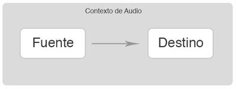
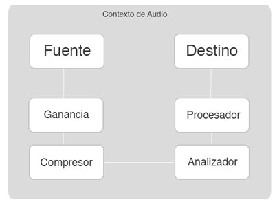

La Web Audio API es una Interfaz de programación avanzada de JavaScript de alto nivel para el procesamiento y síntesis de audio en aplicaciones web. El objetivo de esta API es incluir las funcionalidades y capacidades que encontramos en los motores de las modernas aplicaciones web de escritorio en un entorno web, para realizar tareas de mezcla, procesamiento y filtrado de señal en nuestro navegador.
La Web Audio API está disponible actualmente para los navegadores y , y es accesible para los desarrolladores a través de Javascript. En estos navegadores, el contexto de audio se crea con el prefijo webkit. Mozilla ha publicado que están implementando la Web audio API en Firefox, y pronto estará disponible para la mayoría de navegadores.
En todo caso, podemos inicializar nuestro contexto de audio atendiendo al navegador con que se ejecute la aplicación con el siguiente código:
var contextoDeAudio = (window.AudioContext ||
window.webkitAudioContext ||
window.mozAudioContext ||
window.oAudioContext ||
window.msAudioContext);
if (contextoDeAudio) {
// La Web Audio API está diponible.
} else {
// La web audio api no está disponible
}
Cada contexto de audio puede soportar múltiples entradas y salidas, así como un enrutamiento complejo de la señal, por lo que generalmente necesitaremos sólo un contexto de audio para cada aplicación.
La instancia del contexto de audio incluye métodos para crear nodos de audio, o puntos de procesado de señal, que podremos interconectar para trabajar la señal de audio.

Pulsa este botón para si tu navegador soporta la Web Audio API
Para producir un sonido con la Web audio API, crearemos una o más fuentes de audio y las conectaremos al destino o salida proporcionada por la instancia AudioContext. Esta conexión no tiene que ser directa, y puede ir a través de cualquier número de AudioNodes o etapas de procesado intermedias que actuarán como módulos de procesamiento para la señal de audio. Este enrutamiento se describe en mayor detalle en la especificación de la Web Audio API.
Los nodos de audio son los ladrillos del edificio AudioContext. Esta interfaz representa las fuentes de audio, el destino y los módulos de procesado intermedios. Estos bloques pueden conectarse unos con otros atendiendo a un gráfico de procesado para renderizar o preparar el audio hacia nuestro hardware de salida. Cada nodo posee sus entradas y salidas, excepto por un nodo fuente o SourceNode, que solo presenta una salida, y el AudioDestinationNode, que representa el final de la cadena de audio y solo tiene una entrada. Cada tipo de AudioNode se caracteriza por el tipo de procesado que realiza sobre la señal de audio.
Cada salida tienen un número de canales determinados que podremos especificar y podremos conectarla a la entrada de uno o varios nodos. Para esto utilizaremos el método connect().
Las entradas de los nodos tienen, a su vez, un número de canales determinado. Este número dependerá de las conexiones hechas a la entrada.
channelCountMode y ChannelInterpretation podremos seleccionarlos para tratarlos por separado.Estos métodos funcionan tanto para conectar nuestro nodo a otros nodos como para conectarlos a un AudioParam, que representan una funcionalidad de un nodo.
Uno de los usos más extendidos en el contexto de audio es crear nodos de audio, o etapas de procesado.
Podemos diferenciar varios tipos:
El ruteo modular permite crear conexiones arbitrarias entre los diferentes Nodos de Audio o AudioNodes. Cada nodo puede tener entradas y salidas. Un nodo fuente o Source node, carece de entradas y solamente posee una salida, por el contrario un Nodo de Destino presenta una única entrada. El mejor ejemplo de Nodo de Destino es el AudioDestinationNode, que representa el destino final del hardware de audio del dispositivo. Otros Nodos, como los filtros, pueden ser colocados entre los nodos de fuente y destino. El desarrollador no ha de preocuparse por los pequeños detalles de construcción de la cadena de audio para que esta funcione (aunque también puede hacerlo, y ahondar en las posibilidades de enrutamiento de señal). Por ejemplo si una fuente de audio mono es conectada a una entrada estéreo, los canales se mezclaran automáticamente y se separarán en canal derecho e izquierdo.
El Ruteo modular es la principal y más básica característica de la Web Audio API, y está enmarcada en el Contexto de Audio de la aplicación o AudioContext.
Cada nodo de audio puede ser conectado a otro con la función connect(). Estableceremos una fuente y un destino. La fuente suele ser una dadena de datos de audio proveniente de un buffer de entrada y la salida o .destination es un nodo especial asociado con la salida de audio de tu sistema operativo, a la cual tiene acceso el navegador.

En la imagen puede observarse el ruteo de una señal de audio en una aplicación, lo que podríamos escribir con javascript de la siguiente manera:
var misNodos ={};
//Ruteo
fuentedeAudio.connect(misNodos.volumen);
misNodos.volumen.connect(misNodos.compresor);
misNodos.compresor.connect(misNodos.analizador);
misNodos.analizador.connect(misNodos.procesador);
misNodos.procesador.connect(contextoDeAudio.destination);
Una vez hemos establecido nuestra cadena de audio podemos cambiarla dinámicamente e implementar aplicaciones interactivas que cambien la cadena de audio. Solemos utilizar la llamada nodo.disconnect(salida)